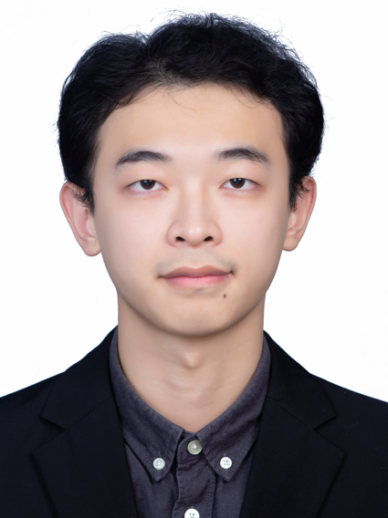
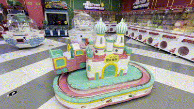
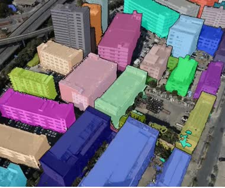
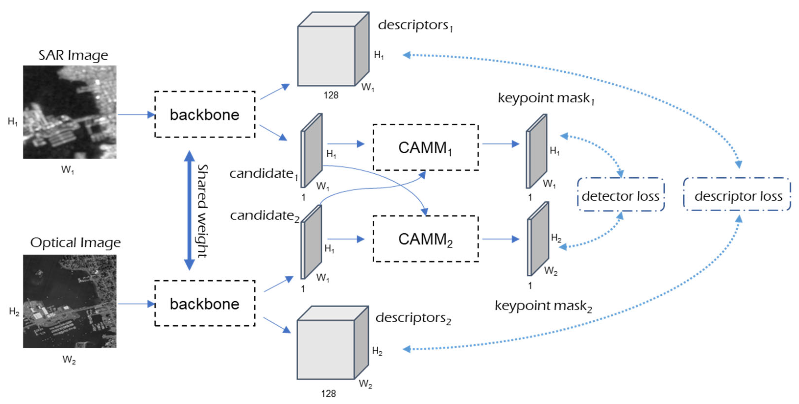

Jiaxing Chen 陈佳兴I am currently a student at the Future Network of Intelligence Institute (FNii) and the School of Science and Engineering (SSE) at The Chinese University of Hong Kong, Shenzhen (CUHK-Shenzhen), under the supervision of Prof. Guanying Chen and Prof. Shuguang Cui. |  |
News
- 2025-11: CloseUpShot is accepted by TVCG 2025.
- 2024: I received my master's degree from Sun Yat-sen University.
- 2024-02: Aerial Lifting is accepted by CVPR 2024.
Previous Experiences
| Graduated in 2024 | Master's degree at Sun Yat-sen University |
| Graduated in 2021 | Bachelor's degree at Central China Normal University |
| Preprint | |
| IntriAdapt: Generalizable Intrinsic-Guided Test-Time Adaptation for Metric Geometry Estimation Submitted to arXiv | |
| 2025 | |
 | CloseUpShot: Close-up Novel View Synthesis from Sparse-views via Point-conditioned Diffusion Model Yuqi Zhang, Guanying Chen#, Jiaxing Chen, Chuanyu Fu, Chuan Huang, Shuguang Cui IEEE Transactions on Visualization and Computer Graphics (TVCG), 2025 arXiv | Project Page | Paper |
| 2024 | |
 | Aerial Lifting: Neural Urban Semantic and Building Instance Lifting from Aerial Imagery Yuqi Zhang, Guanying Chen#, Jiaxing Chen, Shuguang Cui IEEE/CVF Conference on Computer Vision and Pattern Recognition (CVPR), 2024 arXiv | Project Page | Code | Paper |
| 2023 | |
 | SAR and Optical Image Registration Based on Deep Learning with Co-Attention Matching Module Jiaxing Chen, Hongtu Xie#, Lin Zhang, Jun Hu, Hejun Jiang, Guoqian Wang Remote Sensing, 15(15), 3879, 2023 Paper | PDF |
Teaching Assistant
- CUHKSZ 2025 Fall - MAT1001: Calculus